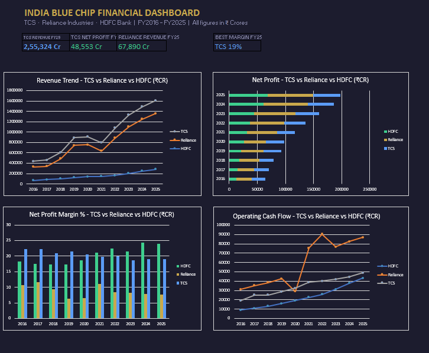
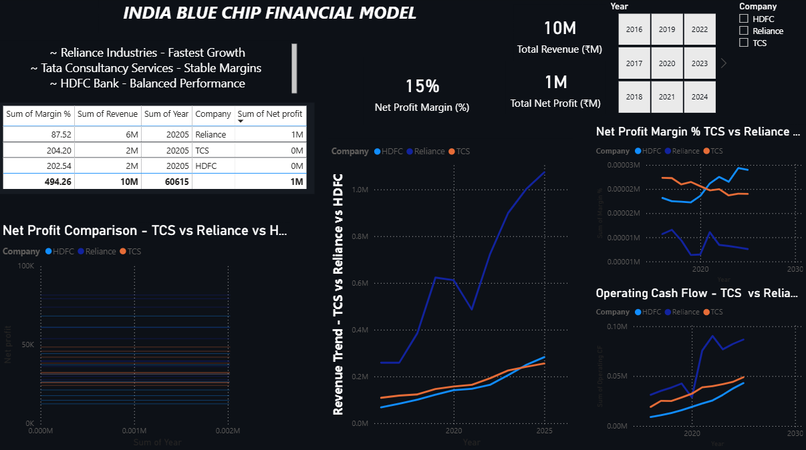

I am a finance fresher passionate about financial analysis and data visualization. I have built real dashboards using actual company data from TCS, Reliance Industries and HDFC Bank. Currently looking for my first role in financial analysis or business intelligence.
Built a professional Excel dashboard comparing TCS, Reliance and HDFC Bank across revenue, net profit, cash flow and profit margins from FY2016 to FY2025 using real Screener.in data.

Rebuilt the same financial data in Power BI with interactive slicers, DAX measures for Profit Margin and Year on Year Growth, and dynamic KPI cards. Fully filterable by company and year.

Microsoft Excel Power BI DAX Power Query Financial Analysis Data Visualization Pivot Tables Financial Modeling
📧 jahanvipoddar6@gmail.com